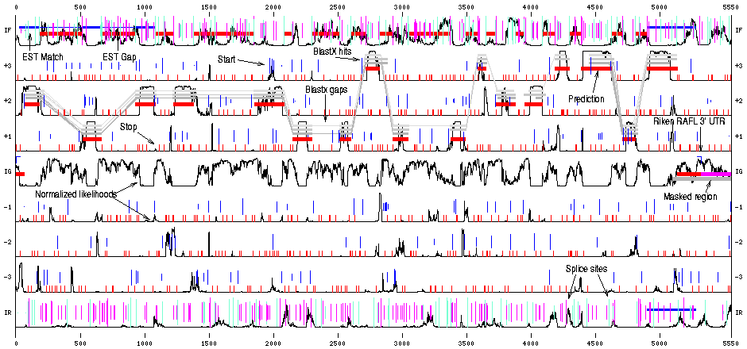

|
EuGène
is an open gene finder for eukaryotic
organisms. Compared to most existing gene finders,
EuGène is characterized by its ability to simply
integrate arbitrary sources of information in its
prediction process.
As most existing gene finders, EuGène can exploit probabilistic models like Markov models for discriminating coding from non coding sequences or to discriminate effective splice sites from false splice sites (using so-called Window Array Models). Beyond this EuGène is able to integrate information from several signal (splice site, traduction start...) prediction software, similarity with existing sequences (EST, mRNA, 5'/3' EST from full length mRNA, proteins, genomic homologuous sequences) and output of existing gene finders... Based on all the available information, EuGène will output a prediction of maximal score i.e., maximally consistent with the information provided. |
|
|||||
|

EuGène graphical output |
Each source of information is integrated in EuGène by
a small independant software component, called a
"plugin". The plugin is responsible for the
integration of the information but also for plotting
the information on the graphical output of EuGène
(if needed) and can also analyze the inconsistencies
between the final prediction and the information
provided.
There exists more than 28 plugins currently but if needed EuGène's users have the ability to extend EuGène. This can be done using two different approaches. One simple approach is to use the "User" plugin. This plugin allows to inject information in EuGène using a very simple langage. For the more serious user, it is possible to write a new plugin directly (in C++) and to load it dynamically into EuGène (without recompilation of eugene). |
|||||
|
EuGène has been used extensively on the
Arabidopsis
genome where it has shown its excellent prediction
quality. It is currently extended to
other plant
organims. EuGène has been developped with funding from
INRA and
Génoplante. The software is now OSI Certified Open Source Software under the terms of the Artistic License. |
||||||